RDF
Mikel Egaña Aranguren
mikel-egana-aranguren.github.io

Mikel Egaña Aranguren
Mikel Egaña Aranguren
mikel-egana-aranguren.github.io
https://github.com/mikel-egana-aranguren/ABD

IA simbólica: se aplica un modelo pre-existente construido por expertos que contiene conocimiento explícito codificado en símbolos (lógica)
IA estadística: el modelo aprende de datos de manera (semi)autónoma mediante procesos probabilísticos
IA simbólica: lógico, determinista. Explicabilidad completa
IA estadística: aproximado, probabilístico. Baja explicabilidad
IA simbólica: necesita menos datos pero frágil ante el ruido
IA estadística: necesita muchos datos de alta calidad, más robusta ante el ruido
IA simbólica: expertos en el dominio
IA estadística: datos y alta capacidad de cómputo (GPUs)
Proyecto utópico para una nueva World Wide Web: cada recurso publica sus datos y los agentes inteligentes los consumen de manera autónoma
Basado en IA simbólica
Se ha implementado parcialmente (Ej. JSON-LD + Schema: Google Knowledge Graph)
LLMs como clientes universales basados en lenguaje natural (Agentes)
Arquitecturas GraphRAG (LLM + Knowledge Graph)
...
Stack de tecnologías:
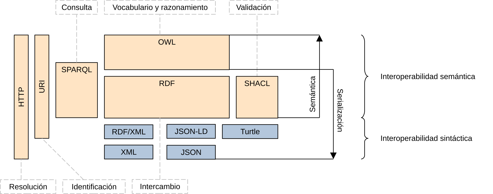
RDF: Resource Description Framework
Estándar oficial del W3C para representar recursos en la web
Actualmente su uso está creciendo en el entorno empresarial para representar datos en Knowledge Graphs (KGs) para implementar arquitecturas centradas en datos: por ejemplo Netflix


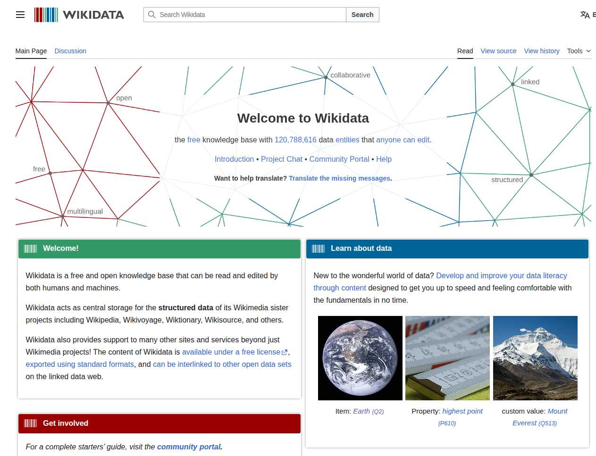
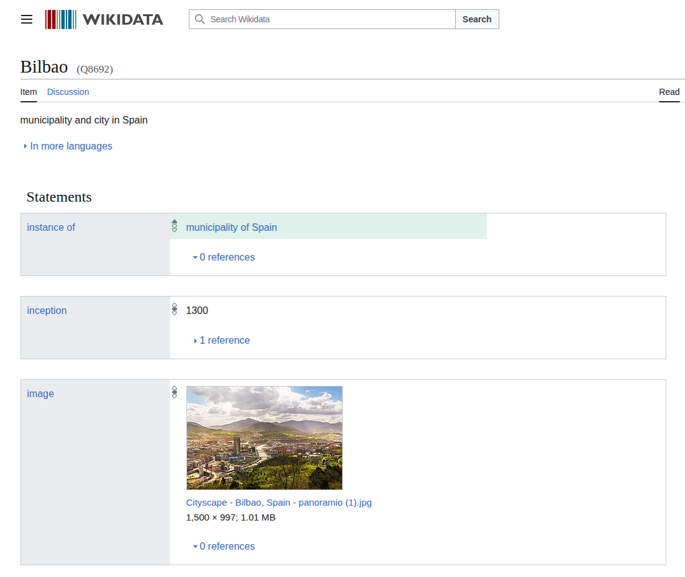
Todas las entidades del grafo se identifican mediante URIs
URI: Uniform Resource Identifier (≠ URL!). Identifica recursos: http://www.wikidata.org/entity/Q8692
URL: Uniform Resource Locator. Una URI que indica la localización física de un documento (Que describe a un recurso) en la red: https://www.wikidata.org/wiki/Q8692

[ejemplos/curl_wikidata.sh]

Los sujetos y predicados sólo pueden ser recursos (URIs)
Algunos objetos pueden ser valores literales (Cadenas de caracteres)
Los valores literales pueden tener tipo (XML Schema datatypes)

RDF es un modelo de datos
Ese modelo abstracto se puede representar con diferentes sintaxis: "Serializar" (escribir) en un archivo
Una de esas sintaxis es RDF/XML
No confundir el modelo con la sintaxis: RDF es más que un archivo XML (o JSON)
RDF/XML: http://www.w3.org/TR/rdf-syntax-grammar/
Turtle: http://www.w3.org/TR/turtle/
JSON-LD: https://www.w3.org/TR/json-ld11/
NQuads: https://www.w3.org/TR/n-quads/

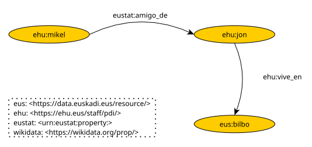
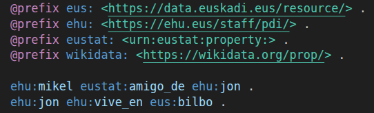
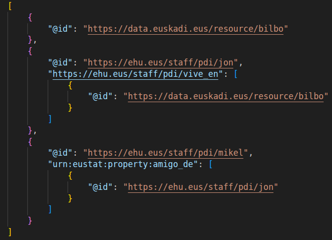
Serialización RDF en JSON: fácil para desarrolladores web
@context define el mapeo de claves JSON a URIs RDF
Usado por Schema.org (Google) para metadatos en páginas web
Google, Bing, Yahoo lo procesan para mejorar búsquedas
[ejemplos/mikel.jsonld]

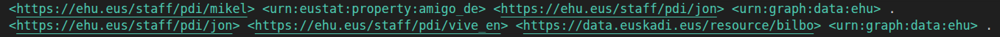
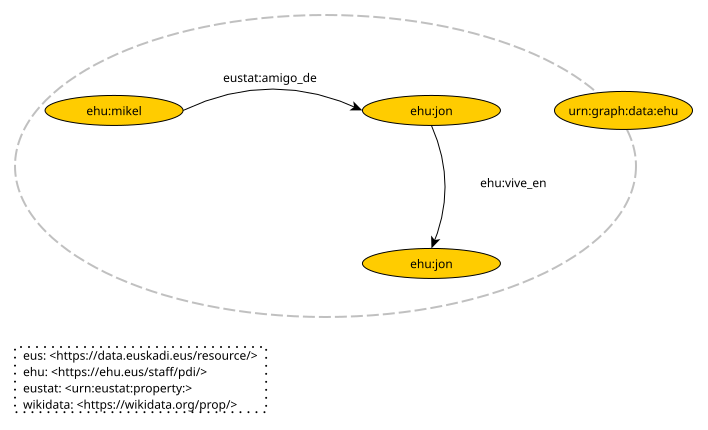
Extensión de N-Triples para Named Graphs
Cada línea: <sujeto> <predicado> <objeto> <grafo> .
Formato simple para exportar/importar múltiples grafos
Usado en dumps de grandes bases de datos (DBpedia, Wikidata)
RDF es un estándar del W3C (=HTML, !=SQL), dado un archivo RDF:
Las Triple Stores surgieron cuando internet ya existía (NoSQL!):
Comerciales: GraphDB, Virtuoso, Stardog, Amazon Neptune, RDFox, AllegroGraph, MarkLogic
Open Source: Apache Jena, Eclipse RDF4J, Oxigraph, QLever
eGela; Guiones de laboratorio; NoSQL; Software necesario
[ejemplos/./graphdb]
[ejemplos/jon_bilbo.ttl]
[ejemplos/mikel_bilbo.ttl]
A tener en cuenta: archivos (tabla) vs grafos, conciliación de entidades con la misma URIs, recursos vs literales
Agrupar triples en una "bolsa" identificada por una URI (Diferente de los datos): Named Graphs
Dependiente de implementación: todas las Triple Stores tienen un Default Graph que contiene todos los triples

[ejemplos/named_graph.nq]
Datos y metadatos en el mismo lenguaje (NoSQL! RDF!)

[ejemplos/named_graph_metadatos.ttl]
Datos y metadatos en el mismo lenguaje (NoSQL! RDF!)

[ejemplos/seguridad_social.nq]
Default Graph

Nodos anónimos sin URI: recursos sin identificador global
Se usan cuando no necesitamos referenciar el recurso desde fuera (no se pueden enlazar desde grafos en servidores externos)
Sintaxis Turtle: _:b1, _:b2, ... o []
El recurso "Jon" no tiene URI propia
[ejemplos/jon_bilbo.ttl >> jon_bilbo_blank.ttl]
Información sobre un triple: Mikel y Jon son amigos desde 1997
Triple RDF: Mikel amigo_de Jon. Desde 1997?
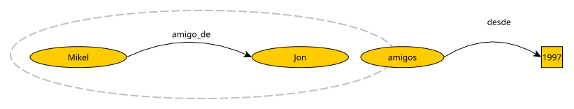
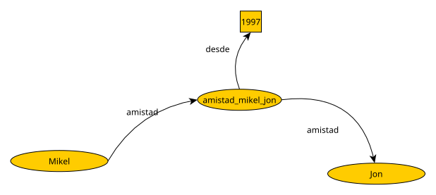
Simplifica la reificación: más intuitivo que Named Graphs, más simple que nodo intermedio
Extensión reciente de RDF: permitir triples como sujetos u objetos
Sintaxis: << sujeto predicado objeto >>
Estándar W3C en desarrollo
[ejemplos/rdfstar.ttl - consultas SPARQL en comentarios]
Operación en SQL que actualiza si existe, inserta si no
INSERT INTO mascotas (id, nombre, color)
VALUES (2, "Fluffy", "negro")
ON DUPLICATE KEY UPDATE color = VALUES(color);
Objetivo: mantener un único valor actualizado para una fila
Basado en: Stratos Kontopoulos (Medium)
Al cargar datos las nuevas tripletas se añaden
Ejemplo: añadir ex:color "negro" no elimina ex:color "marrón"
Resultado: el recurso puede tener múltiples valores para la misma propiedad
El modelo RDF permite varios valores por propiedad en un recurso
Incluso con owl:FunctionalProperty (OWL), la restricción es lógica: la Triple Store no borra automáticamente
Los Triple Stores pueden permitir, avisar (SHACL) o inferir (OWL); no borran automáticamente
En RDF (y OWL), que falte un dato no implica que sea falso u obsoleto (No tener información no implica negación, ya que puede haber información en otro lugar o en el futuro en internet)
Para sustituir un valor, hay que indicar el borrado explícito
Opciones: SPARQL Update (DELETE/INSERT) o reemplazar el grafo completo
Predicado rdf:type - instancias (RDF) y clases (RDFS)

[ejemplos/rdf_type.ttl - Class hierarchy]
rdfs:Class - definir clases
rdfs:subClassOf - jerarquías de clases
rdfs:Property - definir propiedades
rdfs:subPropertyOf - jerarquías de propiedades
rdfs:domain, rdfs:range - restricciones de propiedades
rdfs:label, rdfs:comment - anotaciones
Definen el lenguaje mismo
RDF: http://www.w3.org/1999/02/22-rdf-syntax-ns# (Ej. rdf:type = http://www.w3.org/1999/02/22-rdf-syntax-ns#type), definido por RDF (Se define a si mismo), RDFS y OWL
RDFS: http://www.w3.org/2000/01/rdf-schema# definido por RDF, RDFS (Se define a si mismo) y OWL
Definen el lenguaje mismo
SHACL: https://www.w3.org/ns/shacl.ttl definido por RDF, RDFS y OWL
OWL: http://www.w3.org/2002/07/owl# definido por RDF, RDFS y OWL (Se define a si mismo)
Describen un dominio concreto de la realidad: comercio, genes, geografia, instituciones, ...
Definen propiedades generales de los datos que queremos publicar
foaf:person, dbpedia-ont:city, dc:book, schema:person, ...
RDF: datos específicos (Mikel, Jon, Bilbo, ...)
Ontologías (RDFS, OWL): propiedades generales de esos datos (Persona, Ciudad, ...)

Publicación de datos estructurados en la web de forma que puedan ser enlazados e interpretados por máquinas
Basado en estándares web: URI, HTTP(S), RDF, SPARQL
Propuesto por Tim Berners-Lee (Inventor de la Web) en 2006
Una URI puede devolver diferentes representaciones según el cliente
Navegador web → HTML (para humanos)
Cliente RDF → RDF/XML, Turtle, JSON-LD (para máquinas)
Mediante HTTP Content Negotiation (cabecera Accept)
URI del recurso: http://www.wikidata.org/entity/Q8692
Página web (Humanos - HTML): https://www.wikidata.org/wiki/Q8692
Datos RDF (Agentes): [curl_wikidata.sh]
SPARQL endpoint (Humanos y agentes): https://query.wikidata.org/
URI del recurso: http://dbpedia.org/resource/Bilbao
Página web (Humanos - HTML): https://dbpedia.org/page/Bilbao
Datos RDF (Agentes): https://dbpedia.org/data/Bilbao
SPARQL endpoint (Humanos y agentes): https://dbpedia.org/sparql

★ Datos disponibles en la web (cualquier formato) con licencia abierta
★★ Datos estructurados y legibles por máquina (ej. Excel en vez de imagen)
★★★ Formato no propietario (ej. CSV en vez de Excel)
★★★★ Usar estándares W3C (RDF, SPARQL) para identificar recursos
★★★★★ Enlazar tus datos con otros datos (contexto)
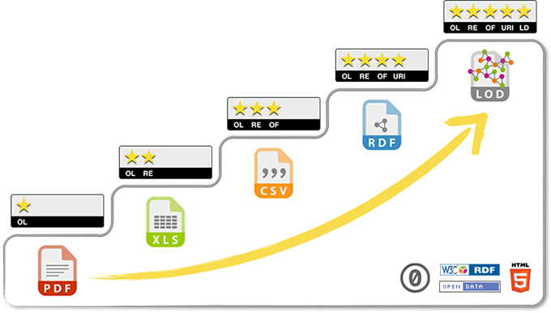
Knowledge Graphs empresariales: integración de datos heterogéneos
Open Data: datos públicos gubernamentales (ej. datos.gob.es)
Bibliotecas y archivos: catálogos bibliográficos enlazados
Ciencia: datos científicos FAIR (Findable, Accessible, Interoperable, Reusable)
Trifid: servidor Linked Data ligero
Solid: pods descentralizados de datos personales

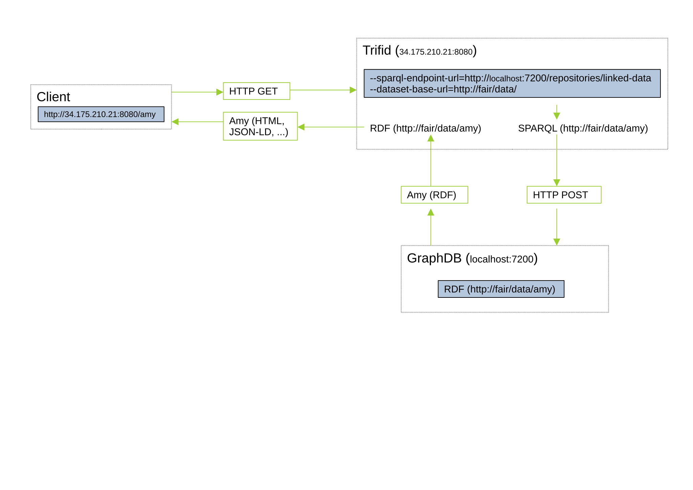